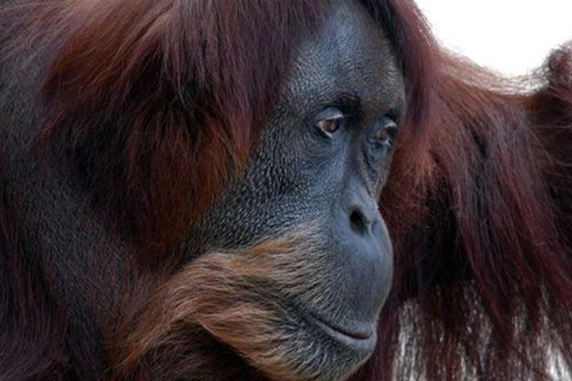
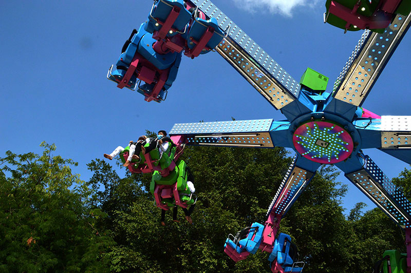

Đầm Sen còn được biết đến như một vườn thú có thể nuôi sinh sản được các loại động vật quý hiếm (thuộc sách đỏ) như: đười ươi Sumatra (sinh 2 lần); vượn má vàng; chim già đẩy, chim Giang sen… Ngoài ra còn có một Thủy cung với các loài thủy sinh vật biển và cá Amazon phong phú, như cá mập, cá Hải tượng (2 mét)… 
ông viên Văn hóa Đầm Sen có 13 trò chơi cảm giác mạnh (Tàu lượn siêu tốc, vượt thác, Power Surge…); 5 trò chơi tương tác ảo công nghệ hiện đại; 5 trò chơi thư giãn; 12 trò chơi thiếu nhi; và nhiều trò chơi khác. 